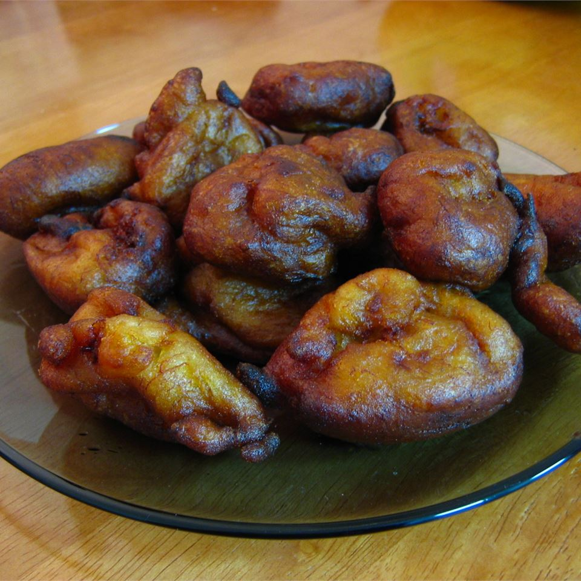

Jemput Jumput (Banana Fritters)

Description
Banana fritter is a traditional Indonesian cake made from banana. They can be used as companion for afternoon tea.
Ingredients
- (5/8) cup all-purpose flour
- 1 pinch salt
- 1 teaspoon baking powder
- 6 ripe bananas
- 3 tablespoons white sugar
- Oil for frying
Steps
- Heat oil in a deep fryer or heavy bottomed pan to 375 degrees F (190 degrees C).
- Sift the flour, salt, and baking powder into a medium bowl.
- In a separate bowl, mash together the bananas and sugar. Gradually mix flour mixture into mashed bananas, stirring until well combined.
- Drop batter by spoonfuls into hot oil, and cook, turning once, until browned, 2 to 8 minutes. Drain on paper towels.
Return to top
Go back to main page